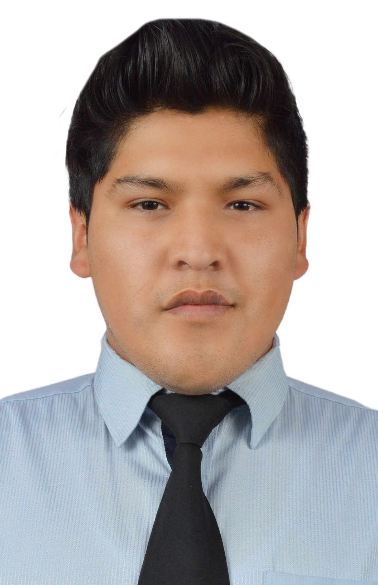

Ricardo Sanjines | WDD 130

Welcome to my page! I am an Electronic Engineer passionate about robotics, 3D design, and teaching engineering concepts. This page showcases my work and interests.

Welcome to my page! I am an Electronic Engineer passionate about robotics, 3D design, and teaching engineering concepts. This page showcases my work and interests.